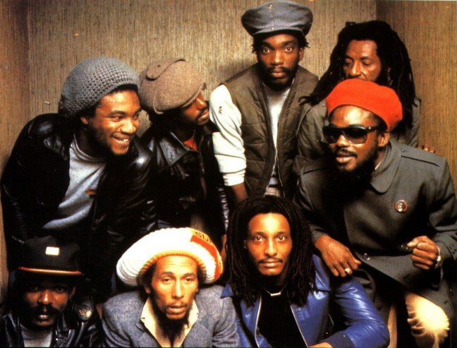
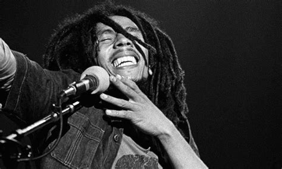

Robert Nesta Marley"Bob" Marley (lahir di Nine Mile, Saint Ann, Jamaika, 6 Februari 1945 – meninggal di Miami, Florida, Amerika Serikat, 11 Mei 1981 pada umur 36 tahun) adalah seorang penyanyi, pencipta lagu, dan musisi reggae berkebangsaan Jamaika. Bob Marley sampai saat ini dikenal di seluruh dunia sebagai musisi reggae yang paling tersohor dalam dunia musik reggae. Dia diakui perannya dalam memopulerkan dan menyebarkan musik Jamaika dan Gerakan Rastafari ke seluruh dunia. • Dalam konser di Madison Square Garden, New York pada 19 dan 20 September 1980 yang merupakan bagian akhir tur dunianya Bob Marley berbagi panggung kelompok The Commodores. The Commodores yang saat itu cukup terkenal di Amerika Serikat, menurut harian The New York Times, tak mampu mengimbangi penampilan sang raja Reggae asal Jamaika itu. Hanya beberapa hari kemudian, Bob Marley ambruk saat sedang joging di Central Park, New York. Saat dibawa ke rumah sakit, dokter memberikan diagnosa yang menyedihkan, kanker yang berawal di jari kakinya telah menyebar ke otak, hati, dan paru-paru. Alhasil, seluruh jadwal turnya dibatalkan dan Bob Marley dibawa ke sebuah klinik di Jerman untuk mendapat perawatan dari ahli kanker Dr Jossef Issels. saat berusia 14 tahun dan mulai menciptakan musik. Saat itu Jamaika tengah memasuki periode kreativitas musik yang luar biasa. Dengan semakin mudahnya mendapatkan radio di Jamaika maka musik dari luar negeri termasuk dari Amerika Serikat mudah dinikmati warga pulau itu. Kemudian dair perpaduan irama musik blues New Orleans dan musik tradisional Afrika untuk pertama kali muncul aliran musik ska. Secara perlahan ska berkembang menjadi reggae yang belum menemukan bentuknya seperti yang kita kenal saat ini hingga akhir 1960-an.
Membentuk grup musik The Wailers.
Bob Marley, Peter Tosh, dan Bunny Wailer kemudian membentuk grup musik The Wailers di masa-masa itu. The Wailers kemudian membuat reggae menjadi genre musik dominan di pulau bekas jajahan Inggris itu. Akhirnya, keunikan reggae terdengar perusahaan rekaman internasional Island Music yang tertarik dengan The Wailers setelah mendengarkan album Catch a Fire (1972) dan Burnin' (1973). Musik reggae Jamaika semakin terkenal setelah musisi Inggris, Eric Clapton membawakan adaptasi lagu I Shot the Sheriff yang diambil dari album Burnin'. Pada 1974, Peter Tosh dan The Wailers berpisah jalan dengan Bob Marley, yang justru membuat kebintangan Marley semakin "moncer". Pada akhir 1970-an, Bob Marley menelurkan sederet album Exodus (1977) yang di dalamnya terdapat sejumlah lagu legendaris seperti Jamming, Waiting In Vain, dan One Love/People Get Ready. Pada 1978, album Kaya dirilis dengan sederet lagu populer seperti Is This Love, dan Sun Is Shining. Album berikutnya Uprising dirilis pada 1980 juga menelurkan lagu-lagu "evergreen" seperti Could You Be Love dan Redemption Song.
Kematian Bob Marley.
Kembali ke sakitnya Bob Marley, kanker yang diidap pria berambut gimbal itu sebenarnya sudah diketahui sejak 1977. Fakta ini tak sesuai kisah populer yang menyebut penyakit kanker itu diakibatkan luka saat bermain sepak bola. Namun, Bob Marley menolak saran dokter yang mengusulkan agar ibu jari kakinya diamputasi karena khawatir akan mengganggu karier panggungnya. Bob Marley juga menolak saran amputasi itu karena tak sejalan dengan keyakinan yang dianutnya. Namun, dia setuju dokter mengangkat kuku ibu jari kakinya lalu menutup bekas kuku itu dengan kulit yang diambil dari pahanya. Kisah selanjutnya adalah sejarah. Setelah delapan bulan dirawat di Jerman dan tak menunjukkan perbaikan, Bob Marley minta agar dia dipulangkan ke Jamaika. Saat dalam penerbangan ke Jamaika, kondisi Bob Marley memburuk dan ketika mendarat di Miami, dia dilarikan ke RS Cedars of Lebanon dan meninggal dunia pada 11 Mei 1981 dalam usia 36 tahun. Penyebab kematiannya adalah kanker yang telah menyebar ke paru-paru dan otaknya. Sebelum meninggal dunia, Bob Marley sempat memberikan pesan terakhir untuk putranya Ziggy. "Uang tak bisa membeli kehidupan," kata Bob Marley kepada putranya. Bob Marley dimakamkan pada 21 Mei 1981 dengan upacara resmi kenegaraan. Ritual pemakaman merupakan kombinasi Kristen Ortodoks Etiopia dan tradisi Rastafari.
Bob Marley dimakamkan di sebuah kapel tak jauh dari tempat dia dilahirkan bersama gitar Gibson Les Paul berwarna merah miliknya. "Suaranya terdengar di mana-mana di tengah dunia elektronik kita saat ini. Ciri-cirinya yang tajam, penampilan megah, dan gaya berjingkraknya merupakan goresan yang tak bisa dihapus dari pikiran kita," kata PM Jamaika Edward Seaga dalam upacara pemakaman sang legenda. "Bob Marley adalah sebuah pengalaman yang meninggalkan jejak yang tak terhapuskan. Dia adalah sosok yang tidak bisa dihapus dari benak kita. Dia adalah bagian dari kesadaran kolektif bangsa ini," tambah Seaga. Bob Marley menikahi Alpharia Constantia Anderson atau lebih dikenal dengan nama Rita Marley. Bom Marley meninggalkan 11 orang anak, tiga dari hubungan pernikahannya dengan Rita sisanya adalah anak Rita dari suami pertamanya dan anak-anak Bob Marley dari hubungan lain. Beberapa putranya seperti Ziggy, Julian, Ky-Many, dan Damian mengikuti jejak sang ayah menjadi musisi reggae. Bob Marley sudah dianggap sebagai salah satu musisi reggae paling besar hingga saat ini. Karya-karyanya yang kental dengan isu sosial membuat namanya cepat dikenal hingga seluruh dunia. Sayangnya, kematian Bob Marley di tahun 1981 silam juga menyisakan banyak misteri. Beberapa teori konspirasi menyebut jika pelantun lagu Three Little Birds ini dibunuh oleh CIA. Ada juga sebuah teori konspirasi yang mengatakan bila kematian Bob Marley sangat terkait dengan masalah internal Amerika selama perang dingin. Saat itu, Bob Marley dianggap sebagai salah satu tokoh kunci yang harus dimusnahkan